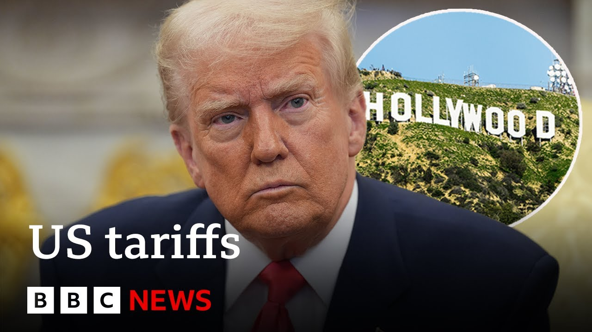

来B站一起耍【Global每日英语简报】
【特朗普宣布对非美国电影征收100%关税 | BBC新闻】
Summary: President Trump announces 100% tariffs on foreign films, citing harm to Hollywood and national security concerns, amid global trade policy criticism.
摘要： 特朗普总统宣布对国外电影征收100%关税，称其损害好莱坞并威胁国家安全，此举正值其全球贸易政策遭受批评之际。

⏱️ Estimated Reading Time: 7 min
President Donald Trump has announced new tariffs on all films made outside the United States, claiming Hollywood was being devastated by a trend of American filmmakers and studios working abroad.
唐纳德·特朗普总统宣布对所有在美国境外制作的电影征收新关税，声称好莱坞因美国电影制片人和工作室在海外工作的趋势而遭受重创。
He accused other countries of luring film crews with tax breaks, calling it a threat to national security.
他指责其他国家通过税收优惠吸引电影摄制组，称这对国家安全构成威胁。
The move comes as the White House is under mounting criticism over its trade policies that have seen Mr. Trump impose sweeping tariffs on countries around the globe.
此举出台之际，白宫因其贸易政策而受到越来越多的批评，特朗普总统已对全球多个国家实施全面关税。
Writing on his Truth Social platform, he said, "I am authorizing the Department of Commerce and the United States Trade Representative to immediately begin the process of instituting a 100% tariff on any and all movies coming into our country that are produced in foreign lands."
他在Truth Social平台上写道：“我授权商务部和美国贸易代表立即开始对进入我国的所有外国制作的电影征收100%关税。”
We can now speak to film, TV, and culture critic Ashanti Omaha.
我们现在可以采访电影、电视和文化评论家阿香提·奥马哈。
Thank you so much for joining us on BBC News.
非常感谢您加入BBC新闻。
So, what do you make of the president's claims that uh the American film industry is being devastated by other countries luring film crews to their countries?
那么，您如何看待总统关于美国电影业因其他国家吸引电影摄制组而遭受重创的说法？
Well, certainly film making has been a very global thing for for for a over a century now.
嗯，当然，电影制作已经是一个非常全球化的事情，已经持续了一个多世纪。
It's been such a such a big industry that makes so much money globally.
这是一个如此庞大的行业，在全球赚取了如此多的钱。
the the global box office is is huge and a lot of those films that make that money are Hollywood productions and in this case it is it is quite a blow to the industry to hear that 100% tariff is going to be put on these productions just because mainly these huge you know Hollywood productions the mission impossibles the you know the Marvel films are being made in different parts of the globe and that's the appeal of these films the whole idea is that these films are being loved across the globe and it is it is a very worrying a worrying thing for the film industry right now and we we don't know exactly how these tariffs are going to hit but it's going to it's going to impact the industry for sure and so how could what could it mean for the type of films and TV series that actually produced in the end if these tariffs were imposed they're just going to become much more expensive so if we take something like James Cameron's Avatar Fire and Ash that's been made in New Zealand.
全球票房非常庞大，其中很多赚钱的电影都是好莱坞制作的，在这种情况下，听到这些制作将被征收100%关税对行业是一个相当大的打击，主要是因为这些大型好莱坞制作，比如《碟中谍》、《漫威电影》等，是在全球不同地区制作的，这正是这些电影的吸引力所在，整个理念是这些电影在全球受到喜爱，这对电影业来说是一个非常令人担忧的事情，我们不知道这些关税具体会如何影响，但它肯定会冲击这个行业，那么如果这些关税被征收，最终会对实际制作的电影和电视剧类型意味着什么，它们只会变得更加昂贵，比如詹姆斯·卡梅隆的《阿凡达：火与灰》是在新西兰制作的。
If they put a 100% tariff on that is say the budget for that film was was 500 million that'll already you know it would already cost double that for it to to to be to be bought to be sold to different territories.
如果对其征收100%关税，假设该电影的预算是5亿美元，那么它要在不同地区销售的成本将翻倍。
It definitely is going to affect how these are made.
这肯定会影响它们的制作方式。
It's going to affect the budgets.
它将影响预算。
It's going to affect the type of talent that these films will attract also.
它还将影响这些电影吸引的人才类型。
And the same goes for TV series because certainly he has mentioned only cinema right now but TV shows are made in in throngs not just in in in Los Angeles in in the heart of Hollywood but also across the globe.
电视剧也是如此，因为他目前只提到了电影，但电视剧的制作不仅集中在洛杉矶好莱坞中心，也在全球范围内进行。
So it is a very worrying thing at the moment.
所以目前这是一个非常令人担忧的事情。
It is indeed a very worrying thing for different countries.
对不同国家来说，这确实是一个非常令人担忧的事情。
So how could the UK film industry respond do you think?
那么您认为英国电影业会如何应对？
Well, I guess that every film industry right now is formulating how to respond and how they'll be dealing with these tariffs given that we know very little about how they're going to be imposed.
嗯，我想每个电影业现在都在制定应对措施，以及如何处理这些关税，因为我们对它们将如何实施知之甚少。
The UK certainly will will be responding in in a in a big way because say a film like Barbie that made over a billion globally that was made mainly in Leverden in the UK.
英国肯定会以重大方式回应，因为像《芭比》这样的电影在全球赚取了超过10亿美元，它主要是在英国的利文斯顿制作的。
the Warner Brothers studio that is right here in the UK.
华纳兄弟工作室就在英国这里。
A TV series like Andor has been filmed largely in the in the UK.
像《安多》这样的电视剧大部分是在英国拍摄的。
Star Wars Andor which is a Disney Plus TV series.
《星球大战：安多》是Disney+的一部电视剧。
So it's it's really interesting that we in the UK the the industry in the UK already has been struggling quite a bit and the UK has been wanting these international productions to be filmed in the UK.
所以很有趣的是，我们英国的行业已经相当挣扎，而英国一直希望这些国际制作在英国拍摄。
There's a lot of UK talent that is working across the globe.
有很多英国人才在全球各地工作。
It would be really nice to see a a reconciliation for this because at the moment it doesn't look good for the UK or for the world if a 100% tariff is imposed on on every production.
如果能达成和解就太好了，因为目前如果对每部制作征收100%关税，对英国或世界来说都不是好事。
Indeed, a story that I think a lot of viewers uh would want to follow there.
确实，我认为很多观众会想关注这个故事。
That's Ashanti, film, TV and culture critic.
这是电影、电视和文化评论家阿香提。
Thank you for joining us on BBC News.
感谢您加入BBC新闻。
Thank you for having me.
谢谢邀请我。